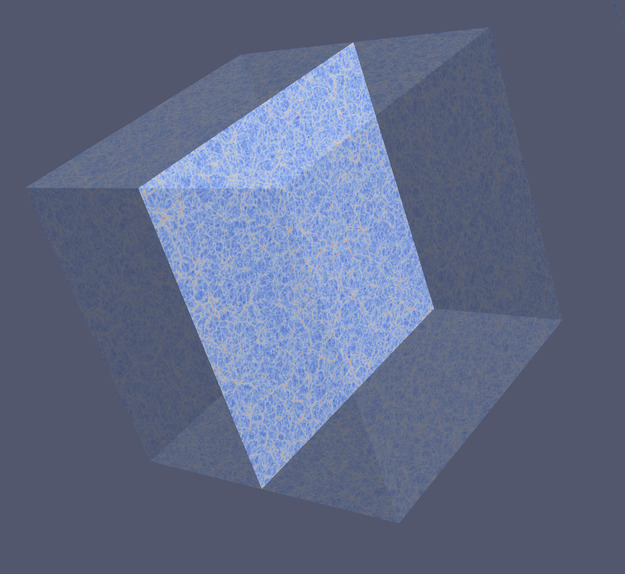

京都産業大学 宇宙論研究室
宇宙論とは
「宇宙論」は宇宙の成り立ちと進化を探る研究分野です。私たちはどこからやって来て、どこへ向かうのでしょう？ 宇宙は何でできているのか？ その形はどうなっているのか？ 果ては存在するのか？ 宇宙はどのように膨張しているのか？ この先に待つ運命は何か？ そして、これらを支配する究極の法則は何か？ こうした問いに答えるため、宇宙論では観測と理論の両面から宇宙の法則を探究します。本研究室では、宇宙を記述する理論的な枠組みである宇宙論モデルを観測データを用いて検証する「観測的宇宙論」に取り組んでいます。特に力を入れているのが、「宇宙の大規模構造」に関する研究です。観測可能な最大スケールにおける宇宙のあり方を、さまざまな手法を駆使して調査することで、ダークマターやダークエネルギーなど、宇宙論の大きな未解決問題に迫ろうとしています。宇宙論は我々人類が調査することができる最大スケールにおける実証科学なのです。

数値シミュレーションによって再現された宇宙の大規模構造
観測的宇宙論
「観測的宇宙論」という名称から、天文台での観測を主とする研究を想像されるかもしれません。しかし、私たちのアプローチは理論的なものに近いです。
具体的には、基礎理論をもとに「どのような観測量を見れば、どのような宇宙の性質がテストできるのか」を理論的に予測します。この予測には、解析的計算のほかに、「富岳」などのスーパーコンピュータによる数値シミュレーションを用います。これにより、銀河が描く宇宙の大規模構造がどのような統計的性質を持つか計算し、それが宇宙論モデル、そこに含まれる宇宙論パラメータと呼ばれる少数の数値、重力理論、宇宙初期に起きたインフレーションの機構の違いをどのように反映するか明らかにします。
理論予測ができるようになると、次に重要なのが「観測データと理論を照らし合わせる」作業です。これは、統計学の知見に基づく情報抽出の問題と言えます。本研究室では、機械学習の技術を応用することで、この問題にアプローチしています。最近では、すばる望遠鏡Hyper Suprime-Camによる弱重力レンズ効果の観測データを活用し、宇宙に占めるダークマターの割合や空間分布に対して制約を行いました。そのほかにもEuclid衛星やRoman宇宙望遠鏡などの国際的な共同研究プロジェクトに参加するなど、宇宙ビッグデータの最前線で研究を推進しています。
このように、私たちは、観測と理論をつなぐ「架け橋」としての役割を果たすことで、宇宙の根本的な謎に迫ろうとしています。また、この過程で、単なる概念実証にとどまらない、活きたデータサイエンス手法の開発・応用を行うとともに、新技術の分野をまたいだ広い応用の可能性を模索しています。
キーワード
宇宙論モデルの検証
ダークエネルギー
ダークマター
インフレーション
ニュートリノ質量の謎
宇宙の大規模構造
摂動論
N体シミュレーション
データ科学的手法の応用
宇宙ビッグデータ
シミュレーションに基づく統計推論
機械学習
エミュレータ
銀河サーベイ
本学科、本研究室についてもっと知るには
京都産業大学では、年7回のオープンキャンパスを開催しています。宇宙物理・気象学科では、教員による学科紹介のほか、在学中の本学科学生から直接話を聞ける個別相談の機会を設けています。本学科ならではの魅力的な模擬授業や体験実習も、毎回異なる内容で実施しています。詳細は、こちらをご覧ください。
今後のオープンキャンパス開催予定
- 2026年8月1日（土）
本研究室担当：「宇宙論×データ科学 ――ダーク成分の謎に挑め――」
宇宙物理・気象学科：「ドップラー効果で探る、躍動する宇宙」
- 2026年8月2日（日）
宇宙物理・気象学科：「ドップラー効果で探る、躍動する宇宙」「大気の重さを測る」
- 2026年9月21日（月・祝）
宇宙物理・気象学科 模擬授業：内容未定
- 2026年12月20日（日） ※学部イベントは行いません。高校1・2年生を主な対象として、「キャリア」をテーマとして実施します。
メンバー
（2026年4月現在）
スタッフ
- 西道 啓博 准教授 (経歴や担当講義についてはこちら、詳細な研究業績についてはこちら)
研究員
- 小林 洋祐 （日本学術振興会特別研究員PD、経歴など）
- 井上 拓也 （科研費研究員、経歴など）
大学院生
博士前期課程2年
博士前期課程1年
学部4年生
（プライバシー保護、サイバーセキュリティの観点から、匿名としています）
- 地平線の向こうを覗くキリン
- ヴァーチャル宇宙を駆ける虎
- 背景放射にまどろむペンギン
- 暗黒の森のリス
卒業生の進路
学部卒業生
大学院博士前期課程修了生
大学院博士後期課程修了生
主な共同研究パートナー
(2026年7月現在、定期的なミーティングを継続中または同一科研費等参加中の共同研究者の所属研究機関)
研究成果のプレスリリース
進行中の科研費等研究計画
主な終了済み研究計画
公開研究ソフトウェア
- Dark Emulator2: Neural-network emulator for the nonlinear matter power spectrum
GitHub / PyPI（2026年5月公開）
- DarkEmulator: Cosmological emulation code for halo clustering statistics
ASCL（2021年3月公開）
- Eclairs: Efficient Codes for the LArge scales of the unIveRSe
ASCL（2018年10月公開）
- RESPRESSO: Rapid and Efficient SPectrum calculation based on RESponSe functiOn（2017年8月公開）
参画中の観測計画
所在地
〒603-8555 京都市北区上賀茂本山 京都産業大学 万有館3F B314研究室
アクセス
万有館へのアクセス
バスプールよりエスカレーターを２台乗り継いだ先の正面の建物（キャンパスマップ）
大学までのアクセス
- 京都市営地下鉄烏丸線「北大路駅」より京都市バス「北３系統」に乗車、終点「京都産大前」下車
- 京都市営地下鉄烏丸線「国際会館駅」より京都バス「40系統」に乗車、終点「京都産業大学」下車
- 京阪電車「出町柳駅」より京都バス「32、34、35、36系統」に乗車、「京都産業大学」下車
- 叡山電車「二軒茶屋」より徒歩約15分（授業期間中は無料シャトルバス運行）
交通情報リンク
宇宙論を本気で学び、研究したい人へ
研究室からのメッセージ
本研究室は、宇宙論を本気で学び、研究したい学生を歓迎します。入学時点で宇宙論の専門知識やプログラミング経験がある必要はありません。しかし、宇宙論の研究には、数学と物理学の確かな基礎、教科書を論理的に読む力、分からない問題に粘り強く取り組む姿勢が不可欠です。
私たちは、18歳時点の大学入試成績だけで将来の可能性を決めません。一方で、研究の水準を下げることもしません。意欲ある学生には、数値シミュレーション、観測データ解析、機械学習、国内外の共同研究を通じて、第一線の宇宙論に挑戦する機会を提供します。
この研究室に向いている人
- 数学や物理で「なぜそうなるのか」を考えることが好きな人
- 難しい教科書を、時間をかけて読み解くことを厭わない人
- すぐに答えが出ない問題にも、試行錯誤を続けられる人
- プログラミングや英語を、研究に必要な道具として身につけたい人
- 大学院進学を含め、本格的な研究に挑戦したい人
高校までに得た宇宙の知識量よりも、数学・物理の基礎と、自ら学び続ける姿勢を重視します。
高校までに身につけてほしいこと
宇宙について深く考えるためには、高校数学、特に微分・積分、ベクトル、三角関数と、物理学の基礎、特に力学をしっかり身につけることが重要です。公式を覚えて問題に当てはめるだけでなく、「なぜこの式になるのか」「どの前提を使っているのか」を意識して、教科書の論理を追う習慣をつけてください。
理解するとは、解答を一度読んで分かった気になることではありません。地図を見て一度歩いた道を、次には周囲の目印を頼りに別の経路からもたどれるように、学んだ原理を使って自分で考え直せることです。難しい問題に出会ったとき、すぐに諦めず、教科書へ戻り、手を動かして確かめる経験が、大学での学びと研究の土台になります。
英語やプログラミングは、入学後に実践を通じて伸ばすことができます。ただし、それらを使って何を考えるかを支えるのは、数学・物理の基礎と論理的な読解力です。入学時点で完成している必要はありませんが、基礎から逃げずに積み上げる覚悟は必要です。
京都産業大学で宇宙論を学ぶ
宇宙物理・気象学科では、2、3年次から宇宙や気象の専門科目を体系的に学び、4年次の「特別研究」で研究室に所属します。学年定員40名に対して11名の専任教員がおり、宇宙物理から惑星科学、気象学まで、多様な分野から研究テーマを選ぶことができます。
入学時に関心のある天体や現象が一つしかなくても問題ありません。「宇宙」は非常に広い研究領域です。まず数学・物理・データ科学という共通の基礎を身につけ、専門科目を学ぶ中で、自分が本気で取り組みたい問いを見つけてください。
本研究室では、理論モデルの構築、スーパーコンピュータを用いた数値シミュレーション、大規模観測データの解析、機械学習の応用を組み合わせて研究します。学部卒業生には、本研究室で研究テーマを見つけ、東京大学大学院をはじめ学内外の大学院へ進学した実績があります。進学先は大学名だけでなく、取り組みたい研究テーマと指導環境を基準に選んでほしいと考えています。
大学院での研究を希望する方へ
博士前期課程（修士課程）
修士課程は、専門的な教科書や論文を読み、理論・数値計算・データ解析の基礎を固めながら、指導教員と相談して研究を進める期間です。本研究室では、基礎を着実に学ぶことと、実際の研究課題に早い段階から触れることの両方を重視します。研究の進展に応じて、学会発表や論文執筆、学外研究者との共同研究にも挑戦します。
博士後期課程（博士課程）
博士課程では、研究分野の最新動向を把握し、自ら問いを立て、研究計画を組み立てて成果を発信することが求められます。指導教員や共同研究者の助言を受けながらも、研究の主体は学生自身です。国内外の研究者との議論、学会発表、論文執筆を通じて、独立した研究者として必要な力を養います。
英語とプログラミング
本研究室では数値計算と国際共同研究が日常的な研究活動の一部です。英語もプログラミングも、資格や知識として先に完成させるのではなく、論文を読み、コードを動かし、議論し、成果を発表する実践の中で身につけます。その前提として、学部レベルの数学・物理と、日本語の専門書を論理的に読みこなす力を求めます。
当研究室で研究したい研究者の方へ
京都産業大学は、日本学術振興会（学振）特別研究員の雇用制度導入機関です。特別研究員(PD, RPD)として採用された場合は、従来の学振からの「研究奨励金」相当の額が本学からの給与として支給され、加えて社会保険等への加入が可能です。本研究室でも学振研究員を受け入れた実績があります。例年、春頃が申請の季節ですので、興味をお持ちの方は、本研究室に直接お問い合わせください。
その他、科研費等財源による雇用の研究員の募集の際には、このホームページでも周知する予定ですので、適宜ご確認ください。
令和9年度採用開始の学振特別研究員の応募については、4月24日(金)が申請に必要なID・パスワード発行申込の期限、5月13日(水)が電子申請システムを通じた申請書類の提出期限です。本研究室での受け入れを希望する場合は、十分に余裕を持ってお早めにコンタクトしてください。